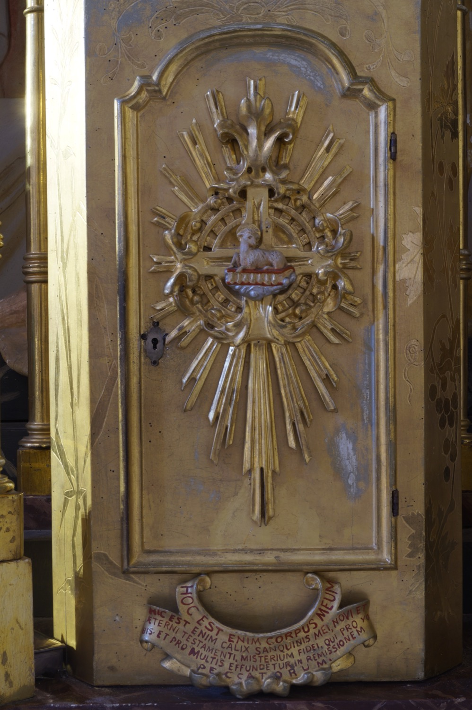

Aquest sagrari és el punt focal de l’altar del Sant Sopar. A la porta hi ha un xotet que simbolitza l’Anyell de Déu i representa Jesucrist com a víctima sacrificada pels pecats del món. A la part baixa del sagrari hi ha escrites en vermell les paraules en llatí que pronuncien els capellans per consagrar el pa i el vi eucarístics. Com la resta del conjunt de l’altar, aquest sagrari és contemporani de la darrera ampliació de l’església i obra de l’escultor Miquel Vadell (s. XX).